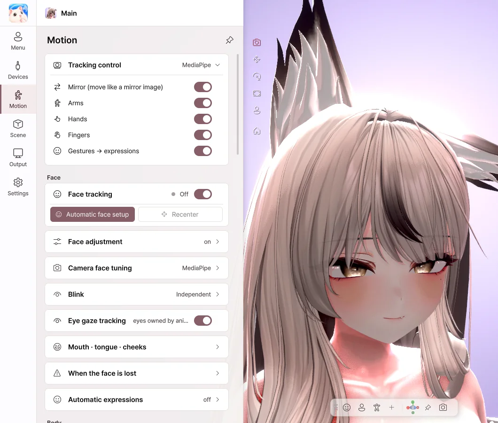
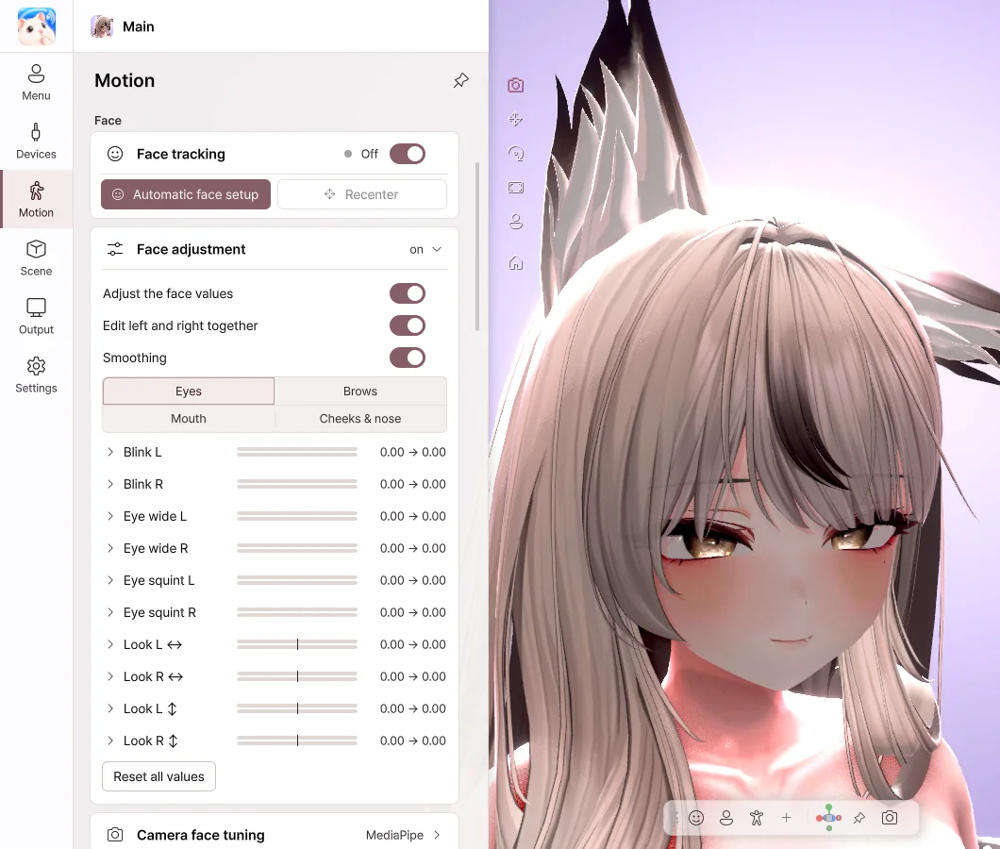
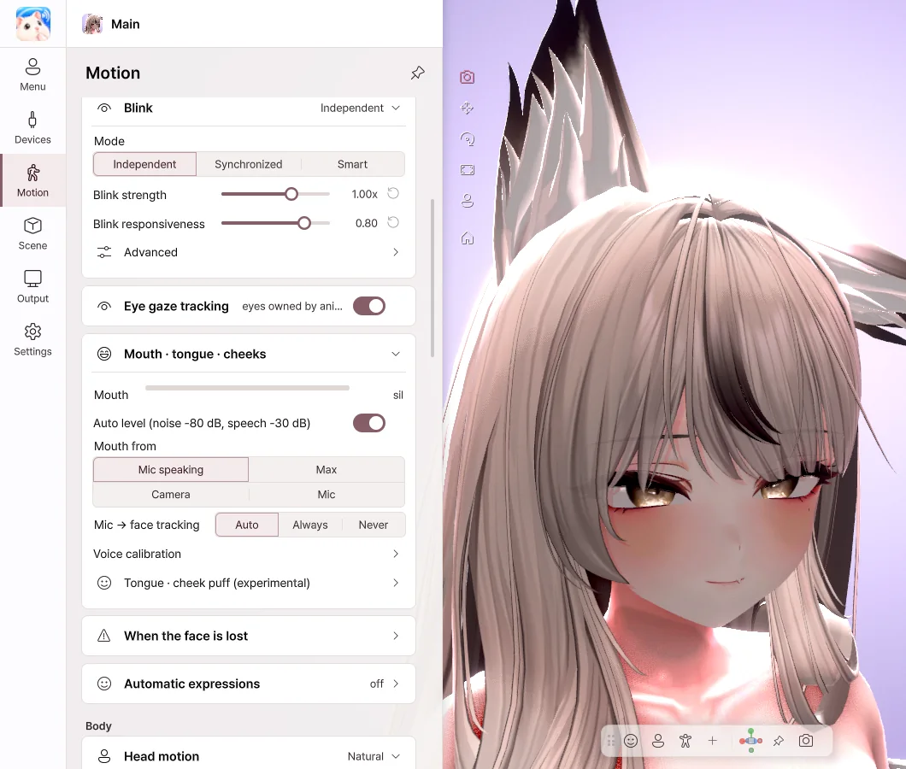
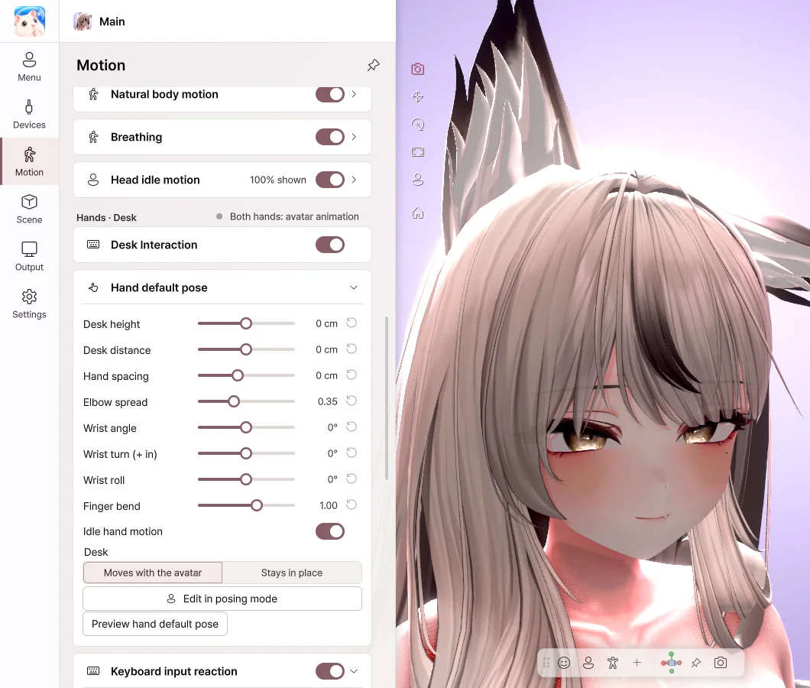

7. Motion
Set how the face, body and hands move. Settings are saved separately for each avatar.
Face tracking

- Mirror — Moves to the same side as you, like a mirror.
- Arms · Hands · Fingers — Moves each part with the webcam.
- Gestures → expressions — The avatar's expression changes to match your hand shape.
- Face tracking — Turns facial expression tracking on and off.
How expressions move
Facial expressions follow the setup already in your avatar. Avatar Live does not create or convert the avatar's expressions.
| Avatar setup | How it moves |
|---|---|
| Has VRCFaceTracking (VRCFT) parameters | Moves through the avatar's VRCFT setup. |
| Has the 52 ARKit shape keys (Perfect Sync) | Drives those shape keys directly. |
| Neither | Mostly the avatar's basic expressions such as blinking and lip sync; finer expressions may not show. |
- Even though the webcam or iPhone reads expressions as 52 values, an expression shows only when the avatar has the matching parameter or shape key.
- If the avatar has only some of the shape keys, only those move.
We plan to improve this so that all 52 expressions are recognised and connected to your avatar, and so that avatars without these setups can be bound to the face directly. Timing may change.
Automatic face setup

Click the Automatic face setup button to start calibration. Make each expression as the on-screen guide shows, then click Capture. At the end, click Apply, and the expressions are adjusted to fit your face.
Where you look during the first step becomes the avatar's straight-ahead gaze. Please look at the screen the way you do while streaming.
Face adjustment

- Adjust, one by one, how strongly the eye, brow, mouth and cheek expressions show.
- Drag a slider to the right, and that expression shows more strongly.
- Turn on Edit left and right together to change both sides at once.
- Turn on Smoothing to reduce jitter in the expressions.
Blink · Mouth

- Blink › Mode — Independent works well for winks, and with Synchronized both eyes close together.
- Eye gaze tracking — The avatar's eyes follow your gaze.
- Auto level — Automatically matches how wide the mouth opens to how loud your voice is.
- Voice calibration — Click a vowel button and say the vowel, and it adapts to your voice.
- Tongue · cheek puff — Stick out the tongue or puff the cheeks with a button or a hotkey.
Body

- Head motion — Choose from Subtle · Natural · Expressive.
- Body follow — When you turn your head, the body follows naturally.
- Natural body motion · Breathing — The avatar moves as if it were alive, even while you keep still.
- Upper body — With webcam full body on, your shoulder movement tilts and turns the upper body. This works even at a desk where your legs can't be seen.
- Full body — Follows the torso, legs, sitting and standing with the webcam or VMC. Please see Devices › Full body · Finger joints.
Hands · Desk

- Desk Interaction — When your hands aren't visible to the camera, the avatar's hands move along with your keyboard and mouse.
- Hand default pose — Adjust the desk height, hand spacing and wrist angle.
- Keyboard · Mouse input reaction — Set how large the typing and mouse movements are.
- Lower your hands, and the arms go straight to the desk pose. Raise them again, and they return smoothly to tracking. The elbows follow naturally even when your body sways a lot or you're sitting.
- You can set an arm · hand pose made in Posing with Use as the desk pose (arms and hands) (Pro).
Keyboard input is used only to move the avatar's hands. The characters you type are not saved or sent.
💡 Camera detection of the tongue and cheek puff is an experimental feature.